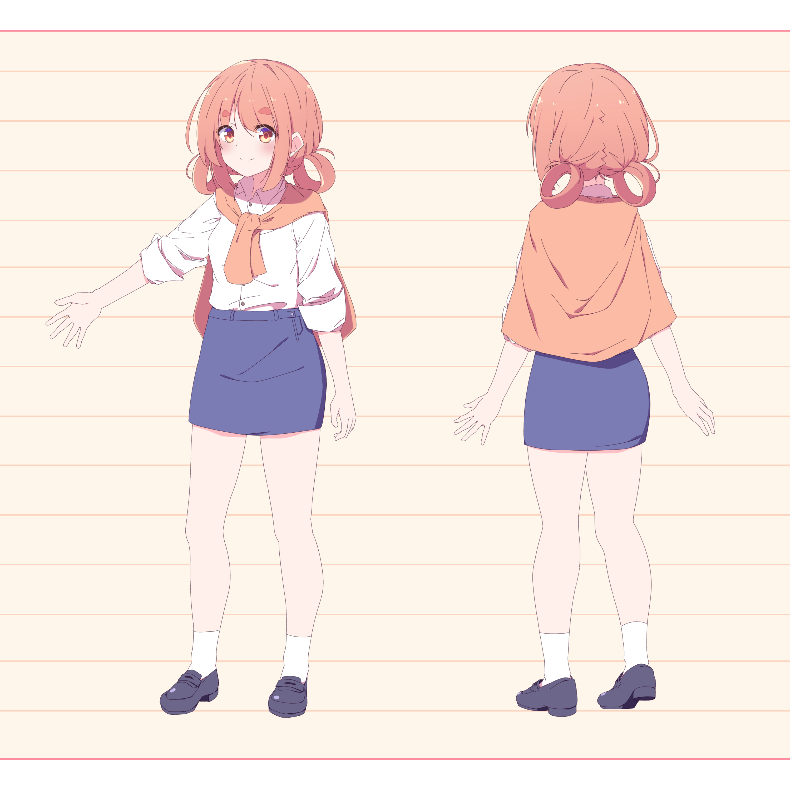

현재 트위치 스트리머로 활동중인 '삐부' 이다.닉네임의 유래는 처음 닉네임을 지을 당시에 '바보' 라는 단어로 지어보다 바보 ? 빠부? 삐부? 이런식으로 완성되었다. 과거엔 그저 인터넷 방송에서 가끔씩 어그로를 끌던 시청자 이였지만 2016년 1월 26일부터 방송을 시작하였다. 목소리는 발음이 약한하고 말할때마다 들숨을 자주 마신다. 이 세계에는 존재 하는지도 의문이 드는 귀여운 목소리라고 평가를 받을때도 있지만 놀릴때 너무나도 약오른 목소리라고도 인식되기도 한다. 귀가 얇은 편이고 최대한 활기차게 방송하려 한다.
'삐부' 님의 캐릭터

캐릭터 설정은 갈생개열의 눈과 머리카락을 가지고 있고, 머리카락은 뒤에 도넛모양으로 양쪽으로 묶은 양갈래 도넛 머리이다. 눈썹은 흔히 말하는 송충이 또는 단무지 눈썹이다.의상은 와이셔츠에 맨 위 단추는 묶지 않고 풀고 있다. 소매는 팔꿈치 부분까지 접는 편이다. 그리고 등에 가디건을 묶어서 매고 있다. 하의는 H치마를 입고 있고 길이는 거의 허벅지 중반 까지 온다. 신발은 딱히 설정 된게 없다.